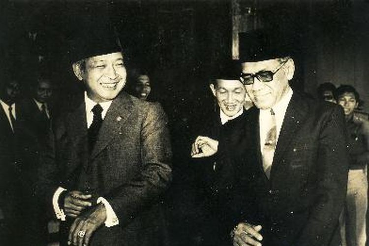

- Dasar Nilai Pancasila
Didasarkan pada nilai-nilai Pancasila, yaitu Ketuhanan Yang Maha Esa, Kemanusiaan yang Adil dan Beradab, Persatuan Indonesia, Kerakyatan yang Dipimpin
oleh Hikmat Kebijaksanaan dalam Permusyawaratan/Perwakilan, dan Keadilan Sosial bagi Seluruh Rakyat Indonesia. Nilai-nilai ini menjadi pedoman dalam
menjalankan sistem politik dan mempengaruhi kebijakan publik.
- Kedaulatan Rakyat
Kedaulatan rakyat sebagai prinsip utama. Kekuasaan politik berada di tangan rakyat dan diwujudkan melalui pemilu yang demokratis. Rakyat memiliki
hak untuk memilih pemimpin mereka dan berpartisipasi dalam proses pengambilan keputusan politik.
- Keberagaman dan Toleransi
Demokrasi Pancasila mendorong adanya kerukunan, toleransi, dan menghargai perbedaan dalam masyarakat. Hal ini tercermin dalam prinsip persatuan Indonesia
dalam Pancasila.
- Gotong Royong
Masyarakat Indonesia didorong untuk bekerja sama dalam mencapai tujuan bersama, baik dalam pembangunan maupun dalam menjaga keharmonisan sosial. Gotong
royong menjadi landasan dalam membangun solidaritas dan persatuan.
- Perlindungan Hak Asasi Manusia
Setiap warga negara memiliki hak-hak dasar yang harus dihormati dan dilindungi, termasuk hak atas kebebasan berpendapat, kebebasan berekspresi, hak untuk
berorganisasi, dan hak untuk beragama.
- Partisipasi Publik
Masyarakat diharapkan ikut serta dalam konsultasi publik, musyawarah, dan diskusi yang berkaitan dengan kebijakan publik. Partisipasi publik ini penting
dalam membangun masyarakat yang responsif terhadap kebutuhan dan aspirasi rakyat.
- Sistem Ketatanegaraan
Penerapan Demokrasi Pancasila melibatkan sistem ketatanegaraan yang menjunjung tinggi prinsip pembagian kekuasaan antara lembaga legislatif, eksekutif,
dan yudikatif. Sistem ini bertujuan untuk menjaga keseimbangan kekuasaan dan menghindari konsentrasi kekuasaan yang berlebihan.
Kehadiran Orde Baru tentu membawa perubahan terhadap pemahaman Pancasila di Indonesia. Pada masa ini, Pancasila berhasil dipertahankan sebagai ideologi
dan dasar negara. Akan tetapi, keberhasilan ini juga disertai dengan terjadinya beberapa penyimpangan.
Penyimpangan Demokrasi Pancasila
Ingin mempertahankan kekuasaan
Pada masa Orde Baru, Presiden Soeharto memang berhasil mempertahankan Pancasila sebagai ideologi sekaligus memberantas paham komunis di Indonesia.
Akan tetapi, implementasi dan aplikasinya terbilang cukup mengecewakan.
Beberapa tahun kemudian, Presiden Soeharto mencetus beberapa kebijakan yang tidak sesuai dengan jiwa Pancasila. Pancasila ditafsirkan sesuai
kepentingan kekuasaan pemerintah sehingga tertutup bagi tafsiran lain dan dijadikan sebagai indoktrinasi. Presiden Soeharto memanfaatkan Pancasila
sebagai alat untuk mempertahankan kekuasaannya. Ia melemahkan aspek-aspek demokrasi, terutama pers, karena dianggap dapat membahayakan kekuasaannya.
Oleh sebab itu, Presiden Soeharto membentuk Departemen Penerangan sebagai lembaga sensor besar-besaran agar setiap berita yang muncul tidak menjatuhkan
pemerintah.
Berkembangnya budaya KKN
Kebijakan lain yang dilakukan Presiden Soeharto demi mempertahankan kekuasaannya adalah dengan melakukan KKN (korupsi, kolusi, dan nepotisme) sehingga masa
Orde Baru juga dikenal sebagai rezim terkorup di Indonesia.
Puncaknya terjadi pada tahun 1997, ketika Indonesia mengalami krisis ekonomi dan moneter, yang memicu banyak demonstrasi untuk menggulingkan rezim Orde Baru.
Selain itu, Presiden Soeharto menggunakan nepotisme untuk keuntungan pribadi dan keluarganya daripada kepentingan rakyat. Soeharto mengeluarkan sekitar
delapan keppres, yang diduga memberi keuntungan kepada keluarga dan orang-orang terdekatnya, yang merupakan contoh nepotisme. Setiap satu dari delapan
keppres mengarah pada pembukaan keran KKN untuk pajak impor, pembebasan pajak bagi keluarga Soeharto, dan pemberian hak monopoli kepada Keluarga Cendana.
Oleh karena itu, keinginan Soeharto untuk mempertahankan kekuasaannya dan mendorong budaya KKN adalah faktor yang menyebabkan penyimpangan dalam demokrasi
Pancasila selama Orde Baru.
|
Adapun kasus-kasus yang dianggap melanggar Hak Asasi Manusia (HAM) berat oleh mantan Presiden Soeharto dan rezim orde baru yang dipimpinnya.
- Penembakan misterius 1981-1985
"Hukuman mati" terhadap residivis, bromocorah, gali, preman tanpa melalui pengadilan ini dikenal sebagai "penembakan misterius" yang terjadi sepanjang
1981-1985.
Dugaan bahwa ini merupakan kebijakan Soeharto dinilai Kontras terlihat jelas dalam pidato rutin kenegaraan pada Agustus 1981.
Soeharto mengungkapkan bahwa pelaku kriminal harus dihukum dengan cara yang sama saat ia memperlakukan korbannya. Operasi tersebut juga bagian dari
shock therapy, sebagaimana diakui Soeharto dalam otobiografinya, Pikiran, Ucapan, dan Tindakan Saya (ditulis Ramadhan KH, halaman 389, 1989).
Amnesty Internasional dalam laporannya mencatat korban jiwa karena kebijakan tersebut mencapai kurang lebih sekitar 5.000 orang, tersebar di wilayah
Jawa Timur, Jawa Tengah dan Bandung.
- Kasus Pulau Buru 1965-1966
Soeharto dalam tindakan kejahatan terhadap kemanusiaan di Pulau Buru bertindak sebagai Panglima Komando Operasi Pemulihan Keamanan dan Ketertiban
yang disingkat Pangkoops Pemulihan Kamtib.
Sebagai Panglima Kopkamtib, Soeharto diduga telah menyebabkan ribuan orang menjadi korban pembunuhan, penangkapan, penahanan massal dan pembuangan
ke pulau Buru.
KontraS merilis berbagai kasus pada masa Orde Baru yang disebut sebagai "Daftar Dosa Soeharto". Beberapa pelanggaran hak sipil dan politik itu di
antaranya Kasus Tanjung Priok (1984), Daerah Operasi Militer di Aceh (1989-1998), kasus Talangsari Lampung (1989), pembunuhan aktivis buruh Marsinah
(1993), pemberedelan media cetak (1994), dan penyerangan kantor DPP PDI 27 Juli 1996.

https://asset.kompas.com/crops/qRKJNJTqFXJ5
CL0JXwVlbnlBh-8=/8x0:400x261/750x500/data/photo/2021/03/2
0/6055271f0de35.jpeg
Lalu, ada penculikan aktivis pro demokrasi (Februari-Maret 1998), Tragedi Trisakti (12 Mei 1998), kerusuhan Mei '98 (13-15 Mei 1998), Kasus Timika
(Mei 1998), pembantaian massal terhadap orang yang diduga berpaham komunis (1965-1966), operasi militer di Papua (1969-1998), pembunuhan wartawan Fuad
Muhammad Syafruddin alias Udin (1996), kasus pembantaian padepokan Haur Koneng Majalengka (1993), larangan berorganisasi penetapan Normalisasi Kehidupan
Kampus/Badan koordinasi Kemahasiswaan (1978), pemberangusan organisasi kemasyarakatan dengan UU Nomor 5 Tahun 1985 tentang Organisasi kemasyarakatan, dan
kasus penembakan warga dalam pembangunan Waduk Nipah Madura (1993).
Selain itu, ada beberapa pelanggaran hak ekonomi, sosial, budaya yaitu perampasan tanah rakyat Kedung Ombo (1985-1989), perampasan tanah rakyat atas nama
PT Perkebunan Nusantara (PTPN), kasus perampasan tanah masyarakat adat Dongi Sulawesi Selatan untuk perusahaan Nikel, perampasan dan penggusuran rumah warga
Bulukumba oleh PT Lonsum, kasus pencemaran dan kekerasan yang dilakukan oleh Indorayon di Porsea Sumatera Utara, kasus pembakaran rumah warga, dan kekerasan
seksual yang dilakukan oleh PT Kelian Equal Mining di Kalimantan Timur.
|